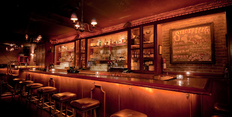
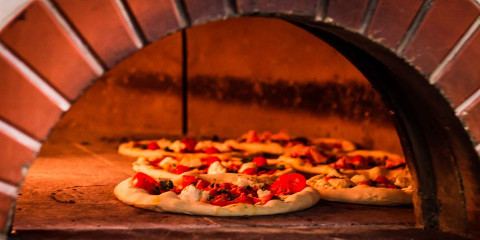

Orari delle visite
- Dal lunedì al venerdi: 9:30 - 18:30;
- Sabato e prestivi: 9:00 - 20:00;
- Domenica e festivi: 9:00 - 19:00
Servizi
Guardaroba
Al'interno del nostro museo è sempre possibile depositare i propri giubbotti e borse nell'apposito guardaroba, per rendere la tua visita più piacevole e leggera.

Bar
I nostri bar, presenti in entrambi gli edifici, sono sempre pronti a deliziarvi con delicate colazioni, golosi spuntini, freschi apertivi e molto altro ancora. Il bar è aperto tutti i giorni dalle 8:30 alle 18:30.

Pizzeria Sorina
E' presente una pizzeria con forno a legna la cui gestione è affidata a una società esterna. La pizzeria Sorina è aperta nei giorni festivi dalle ore 18 alle ore 21.
Negozio souvenir
All'uscita del museo potrai acquistare un piccolo souvenir, per portare a casa e poter conservare un piccolo ricordo della tua visita.
Torna all'inizio